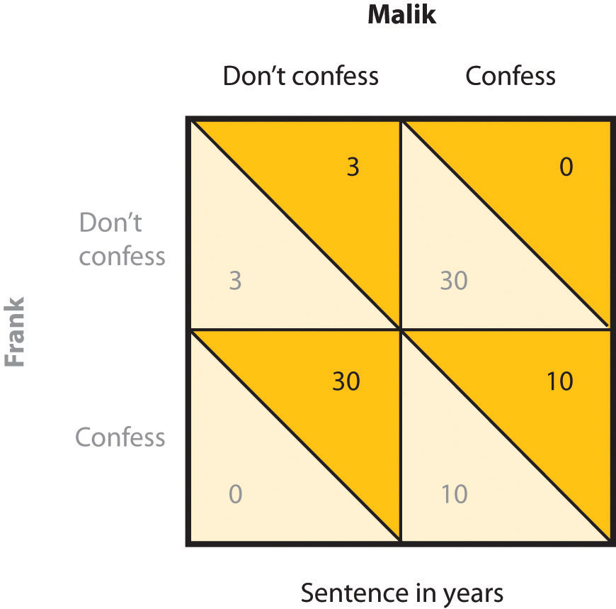
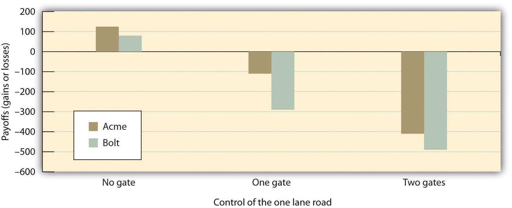
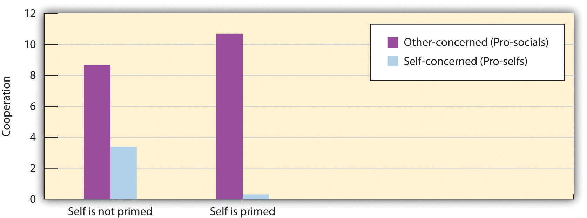
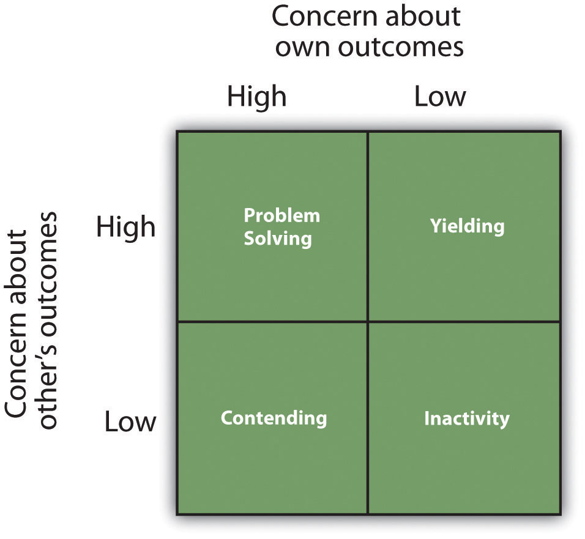

If human beings are well-equipped to cooperate with each other, and if morality, social fairness, and other human features favor it, why are so many social relationships still competitive? If you guessed that the competition comes not so much from the people as it does from the nature of the social situation, then you would be correct. In short, competition is often caused by the social dilemma itself—the dilemma creates patterns whereby even when we want to be good, the situation nevertheless rewards us for being selfish. Ross and Ward (1995)Ross, L., & Ward, A. (1995). Psychological barriers to dispute resolution. Advances in experimental social psychology, 27, 255–304. Retrieved from http://search.ebscohost.com/login.aspx?direct=true&db=psyh&AN=2003-02325-006&site=ehost-live found that participants played a game more competitively when it was described as a “Wall Street Broker Game” than when the same game was called a “Community Game.” And other studies have found that subliminal priming of money or business materials (e.g., boardroom tables and business suits) increases competition (Kay, Wheeler, Bargh, & Ross, 2004; Vohs, Meed, & Goode, 2006).Kay, A. C., Wheeler, S. C., Bargh, J. A., & Ross, L. (2004). Material priming: The influence of mundane physical objects on situational construal and competitive behavioral choice. Organizational Behavior and Human Decision Processes, 95(1), 83–96. doi: 10.1016/j.obhdp.2004.06.003; Vohs, K. D., Mead, N. L., & Goode, M. R. (2006). The psychological consequences of money. Science, 314(5802), 1154–1156. doi: 10.1126/science.1132491
Social dilemmas occur when the members of a group, culture, or society are in potential conflict over the creation and use of shared public goods. Public goodsA benefit that is shared by a community at large and that everyone in the group has access to, regardless of whether or not they have personally contributed to the creation of the good. are benefits that are shared by a community at large and that everyone in the group has access to, regardless of whether or not they have personally contributed to the creation of the goods (Abele, Stasser, & Chartier, 2010).Abele, S., Stasser, G., & Chartier, C. (2010). Conflict and coordination in the provision of public goods: A conceptual analysis of continuous and step-level games. Personality and Social Psychology Review, 14(4), 385–401. doi: 10.1177/1088868310368535 In many cases, the public good involves the responsible use of a resource that if used wisely by the group as a whole will remain intact but if overused will be destroyed. Examples include the crabs in the Chesapeake Bay, water in local reservoirs, public beaches, and clean air. In other cases, the public good involves a service—such as public television or public radio—that is supported by the members of the community but that is used freely by everyone in the community.
Let’s consider first a case in which a social dilemma leads people to overuse an existing public good—a type of social dilemma called a harvesting dilemmaA social dilemma that leads people to overuse an existing public good.. One example, called the commons dilemma, was proposed by Garrett Hardin (1968).Hardin, G. (1968). The tragedy of the commons. Science, 162(3859), 1243–1248. Hardin noted that in many towns in Europe, there was at one time a centrally located pasture, known as the commons, which was shared by the inhabitants of the village to graze their livestock. But the commons was not always used wisely. The problem was that each individual who owned livestock wanted to be able to use the commons to graze his or her own animals. However, when each group member took advantage of the commons by grazing many animals, the commons became overgrazed, the pasture died, and the commons was destroyed.
Although Hardin focused on the particular example of the commons, he noted that the basic dilemma of individual needs and desires versus the benefit of the group as whole could also be found in many contemporary public goods issues, including the use of limited natural resources and public land. In large cities, most people may prefer the convenience of driving their own car to work each day rather than taking public transportation. Yet this behavior uses up public goods (roads that are not clogged with traffic, and air that is free of pollution). People are lured into the dilemma by short-term self-interest, seemingly without considering the potential long-term costs of the behavior, such as air pollution and the necessity of building even more highways.
Social dilemmas such as the commons dilemma are arranged in a way that it is easy to be selfish because the personally beneficial choice (such as using water during a water shortage or driving to work alone in one’s own car) produces benefits for the individual, no matter what others do. Furthermore, social dilemmas tend to work on a type of “time delay.” Because the long-term negative outcome (the extinction of fish species or dramatic changes in the climate) is far away in the future, and yet the individual benefits are occurring right now, it is difficult to see how many costs there really are. The paradox, of course, is that if everyone takes the personally selfish choice in an attempt to maximize his or her own rewards, the long-term result is poorer outcomes for every individual in the group. Each individual prefers to make use of the public goods for himself or herself, whereas the best outcome for the group as a whole is to use the resources more slowly and wisely.
Another type of social dilemma—the contributions dilemmaA social dilemma that occurs when the short-term costs of a behavior lead individuals to avoid performing it, which may prevent the long-term benefits that would have occurred if the behaviors had been performed.—occurs when the short-term costs of a behavior lead individuals to avoid performing it, and this may prevent the long-term benefits that would have occurred if the behaviors had been performed. An example of a contributions dilemma occurs when individuals have to determine whether or not to donate to the local public radio or television station. If most people do not contribute, the TV station may have lower quality programming, or even go off the air entirely, thus producing a negative outcome for the group as a whole. However, if enough people already contribute, then it is not in anyone’s own best interest to do so, because the others will pay for the programming for them. Contributions dilemmas thus encourage people to free ride, relying on other group members to contribute for them.
One method of understanding how individuals and groups behave in social dilemmas is to create such situations in the laboratory and observe how people react to them. The best known of these laboratory simulations is called the prisoner’s dilemma game (Poundstone, 1992).Poundstone, W. (1992). Prisoner’s dilemma. New York, NY: Doubleday. The prisoner’s dilemma gameA laboratory simulation that models a social dilemma in which the goals of the individual compete with the goals of another individual (or sometimes with a group of other individuals). is a laboratory simulation that models a social dilemma in which the goals of the individual compete with the goals of another individual (or sometimes with a group of other individuals). Like all social dilemmas, the prisoner’s dilemma makes use of the assumptions of social learning approaches to behavior that assume that individuals will try to maximize their own outcomes in their interactions with others.
In the prisoner’s dilemma, the participants are shown a payoff matrix in which numbers are used to express the potential outcomes for the each of the players in the game, given the decisions made by each player. The payoffs are chosen beforehand by the experimenter to create a situation that models some real-world outcome. Furthermore, in the prisoner’s dilemma, the payoffs are normally arranged as they would be in a typical social dilemma, such that each individual is better off acting in his or her immediate self-interest, and yet if all individuals act according to their self-interest, then everyone will be worse off.
In its original form, the prisoner’s dilemma involves a situation in which two prisoners (we’ll call them Frank and Malik) have been accused of committing a crime. The police have determined that the two worked together on the crime, but they have only been able to gather enough evidence to convict each of them of a more minor offense. In an attempt to gain more evidence and thus to be able to convict the prisoners of the larger crime, each prisoner is interrogated individually, with the hope that he will confess to having been involved in the more major crime in return for a promise of a reduced sentence if he confesses first. Each prisoner can make either the cooperative choice (which is to not confess) or the competitive choice (which is to confess).
The incentives for either confessing or not confessing are expressed in a payoff matrix such as the one shown in Figure 13.2 "The Prisoner’s Dilemma". The top of the matrix represents the two choices that Malik might make (either to confess that he did the crime or to not confess), and the side of the matrix represents the two choices that Frank might make (also to either confess or not confess). The payoffs that each prisoner receives, given the choices of each of the two prisoners, are shown in each of the four squares.
Figure 13.2 The Prisoner’s Dilemma
In the prisoner’s dilemma, two suspected criminals are interrogated separately. The payoff matrix indicates the outcomes for each prisoner, measured as the number of years each is sentenced to prison, as a result of each combination of cooperative (don’t confess) and competitive (confess) decisions. Outcomes for Malik are in the darker color, and outcomes for Frank are in lighter color.
If both prisoners take the cooperative choice by not confessing (the situation represented in the upper left square of the matrix), there will be a trial, the limited available information will be used to convict each prisoner, and each will be sentenced to a short prison term of 3 years. However, if either of the prisoners confesses, turning “state’s evidence” against the other prisoner, then there will be enough information to convict the other prisoner of the larger crime, and that prisoner will receive a sentence of 30 years, whereas the prisoner who confesses will get off free. These outcomes are represented in the lower left and upper right squares of the matrix. Finally, it is possible that both players confess at the same time. In this case, there is no need for a trial, and in return, the prosecutors offer a somewhat reduced sentence (of 10 years) to each of the prisoners.
The prisoner’s dilemma has two interesting characteristics that make it a useful model of a social dilemma. For one, the prisoner’s dilemma is arranged such that a positive outcome for one player does not necessarily mean a negative outcome for the other player (i.e., the prisoner’s dilemma is not a fixed-sum situation but an integrative one). If you consider again the matrix in Figure 13.2 "The Prisoner’s Dilemma", you can see that if one player takes the cooperative choice (to not confess) and the other takes the competitive choice (to confess), then the prisoner who cooperates loses, whereas the other prisoner wins. However, if both prisoners make the cooperative choice, each remaining quiet, then neither gains more than the other, and both prisoners receive a relatively light sentence. In this sense, both players can win at the same time.
Second, the prisoner’s dilemma matrix is arranged such that each individual player is motivated to take the competitive choice because this choice leads to a higher payoff regardless of what the other player does. Imagine for a moment that you are Malik, and you are trying to decide whether to cooperate (don’t confess) or to compete (confess). And imagine that you are not really sure what Frank is going to do. Remember that the goal of the individual is to maximize rewards. The values in the matrix make it clear that if you think that Frank is going to confess, you should confess yourself (to get 10 rather than 30 years in prison). And it is also clear that if you think Frank is not going to confess, you should still confess (to get 0 rather than 3 years in prison). So the matrix is arranged such that the “best” alternative for each player, at least in the sense of pure self-interest, is to make the competitive choice, even though in the end both players would prefer the combination in which both players cooperate to the one in which they both compete.
Although initially specified in terms of the two prisoners, similar payoff matrices can be used to predict behavior in many different types of dilemmas involving two or more parties and including choices between helping and not helping, working and loafing, and paying and not paying debts (weber & Messick, 2004).weber, J. M., & Messick, D. M. (2004). Conflicting interests in social life: Understanding social dilemma dynamics. In M. J. Gelfand & J. M. Brett (Eds.), The handbook of negotiation and culture (pp. 374–394). Palo Alto, CA: Stanford University Press. For instance, we can use the prisoner’s dilemma to help us understand a contributions dilemma, such as why two roommates might not want to contribute to the housework. Each of them would be better off if they relied upon the other to clean the house. Yet if neither of them makes an effort to clean the house (the cooperative choice), the house becomes a mess and they will both be worse off.
In many cases, the prisoner’s dilemma game is played over a series of trials, in which players can modify their responses based on those given by their partners on previous trials. For example, the arms race between the Soviet Union and the United States during the Cold War can be seen as a social dilemma that occurs over time. Over a period of years, each country chooses whether to compete (by building nuclear weapons) or to cooperate (by not building nuclear weapons). And in each case, both countries feel that it is in their best interest to compete rather than cooperate.
The prisoner’s dilemma can also be expanded to be played by more than two players. The behavior of individuals leaving a crowed parking lot, as an example, represents a type of prisoner’s dilemma in which it is to each person’s individual benefit to try to be the first to leave. However, if each person rushes to the exit without regard for others, a traffic jam is more likely to result, which slows down the process for everyone. If all individuals take the cooperative choice—waiting until their turn—everyone wins.
In addition to the prisoner’s dilemma, social dilemmas have been studied using games in which a group of individuals share a common pool of resources. In these resource dilemma games, the participants may extract or harvest resources from the pool, and it is to their individual advantage to do so. Furthermore, as the resources are used, the pool can replenish itself through a fixed schedule, which will allow the individuals to continue to harvest over long periods of time. Optimal use of the resource involves keeping the pool level up and harvesting only as much as will be replenished in the given time period. Overuse of the pool provides immediate gain for the individuals but has a long-term cost in the inability to make harvests at a later time.
In one version of a resource dilemma game (Edney, 1979),Edney, J. J. (1979). The nuts game: A concise commons dilemma analog. Environmental Psychology and Nonverbal Behavior, 3(4), 252–254. the participants sit around a bowl of metal nuts, and the goal is to get as many nuts as one can. The experimenter adds nuts to the bowl such that the number of nuts in the bowl doubles every 10 seconds. However, the individual players are also motivated to harvest nuts for themselves and are allowed to take out as many nuts as they like at any time. In Edney’s research, rather than cooperating and watching the pool grow, the participants almost immediately acted in their self-interest, grabbing the nuts from the bowl. In fact, Edney reported that 65% of the groups never got to the first 10-second replenishment!
The Trucking Game
Another example of a laboratory simulation that has been used to study conflict is the trucking game. In the original research (Deutsch & Krauss, 1960),Deutsch, M., & Krauss, R. M. (1960). The effect of threat upon interpersonal bargaining. Journal of Abnormal and Social Psychology, 61, 181–189. pairs of women played the trucking game. Each woman was given $4 to begin with and was asked to imagine herself as the owner of one of two trucking companies (Acme or Bolt) that carried merchandise over the roads shown in the figure called “The Road Map From the Trucking Game”. Each time either player’s truck reached the destination on the opposite side of the board, she earned 60 cents, minus operating costs (1 cent for each second taken by the trip). However, the game was also arranged to create the potential for conflict. Each participant wanted to travel on the main road in order to get to the destination faster, but this road was arranged to be so narrow that only one truck could pass at a time. Whenever the two trucks met each other on this narrow road, one of them was eventually forced to back up. Thus there are two choices to getting to the destination. The players had to either take the long, winding roads, thus eliminating their profits (each player would lose 10 cents on each trip if they were forced to take the long road) or figure out a way to share the use of the one-lane road.
Figure 13.3 The Road Map From the Trucking Game

From Deutsch (1973).Deutsch, M. (1973). The resolution of conflict. New Haven, CT: Yale University Press.
Figure 13.4 Outcomes of a Trucking Game Study
Data are from Deutsch and Krauss (1960).Deutsch, M., & Krauss, R. M. (1960). The effect of threat upon interpersonal bargaining. Journal of Abnormal and Social Psychology, 61, 181–189.
Deutsch and Krauss made the game even more interesting by creating experimental conditions in which either or both of the truck company owners had a gate that controlled access to the road. In the unilateral-threat condition, only Acme had a gate. Thus if Bolt attempted to use the main road, Acme could close the gate, forcing Bolt to back up and enabling Acme to reopen the gate and proceed quickly to the destination. In the bilateral-threat condition, both sides had gates, whereas in the no-threat condition, there were no gates.
As shown in the figure titled “Outcomes of a Trucking Game Study,” participants without gates soon learned to share the one-lane road, and, on average, each made a profit. However, threat in the form of a gate produced conflict and led to fewer profits, although in many cases the participants learned to deal with these problems over time and improved their payoffs as the game went on (Lawler, Ford, & Blegen, 1988; Shomer, Davis, & Kelley, 1966).Lawler, E. J., Ford, R. S., & Blegen, M. A. (1988). Coercive capability in conflict: A test of bilateral deterrence versus conflict spiral theory. Social Psychology Quarterly, 51(2), 93–107; Shomer, R. W., Davis, A. H., & Kelley, H. H. (1966). Threats and the development of coordination: Further studies of the Deutsch and Krauss trucking game. Journal of Personality and Social Psychology, 4, 119–126. Participants lost the most money in the bilateral-threat condition in which both sides were given gates that they could control. In this situation, conflict immediately developed, and there were standoffs on the middle road that wasted time and prevented either truck from moving.
Two results of this study are particularly surprising. First, in the unilateral threat condition, both players (including Acme, who had control of the gate) made less money than did those in the no-threat condition (although it is true that in this condition, Acme did lose less than Bolt). Thus being able to threaten the other was not successful for generating overall profits. Second, in the conditions in which both individuals had gates, both individuals actually did worse than they did when only one individual had a gate. Thus when an opponent is able to threaten you, it may be to your benefit to not return with a threat of your own—the ability to counteract the threats of your partner may not always help you but rather may produce even more conflict and losses for both parties.
Although we have to this point focused on how situational variables, such as the nature of the payoffs in the matrix, increase the likelihood that we will compete rather than cooperate, not everyone is influenced the same way by the situation—the personality characteristics of the individuals also matter. In general, people who are more self-oriented are more likely to compete, whereas people who are more other-oriented are more likely to cooperate (Balliet, Parks, & Joireman, 2009; Sagiv, Sverdlik, & Schwarz, 2011).Balliet, D., Parks, C., & Joireman, J. (2009). Social value orientation and cooperation in social dilemmas: A meta-analysis. Group Processes and Intergroup Relations, 12(4), 533–547; Sagiv, L., Sverdlik, N., & Schwarz, N. (2011). To compete or to cooperate? Values’ impact on perception and action in social dilemma games. European Journal of Social Psychology, 41(1), 64–77. For instance, Campbell, Bush, Brunell, and Shelton (2005)Campbell, W. K., Bush, C. P., Brunell, A. B., & Shelton, J. (2005). Understanding the social costs of narcissism: The case of the tragedy of the commons. Personality and Social Psychology Bulletin, 31(10), 1358–1368. found that students who were highly narcissistic (i.e., very highly self-focused) competed more in a resource dilemma and took more of the shared resource for themselves than did the other people playing the game.
Self and Other Orientations in Social Dilemmas
Paul Van Lange and his colleagues (Van Lange, 1999; Van Lange & Kuhlman, 1994)Van Lange, P. A. M. (1999). The pursuit of joint outcomes and equality in outcomes: An integrative model of social value orientations. Journal of Personality and Social Psychology, 77, 337–349; Van Lange, P. A. M., & Kuhlman, D. M. (1994). Social value orientations and impressions of partner’s honesty and intelligence: A test of the might versus morality effect. Journal of Personality and Social Psychology, 67(1), 126–141. have focused on the person determinants of cooperation by characterizing individuals as one of two types—those who are “pro-social,” meaning that they are high on other-concern and value cooperation, and those who are “pro-self” and thus tend to behave in a manner that enhances their own outcomes by trying to gain advantage over others by making competitive choices.
Sonja Utz (2004)Utz, S. (2004). Self-activation is a two-edged sword: The effects of I primes on cooperation. Journal of Experimental Social Psychology, 40(6), 769–776. tested how people who were primarily self-concerned would respond differently than those who were primarily other-concerned when the self-concept was activated. In her research, male and female college students first completed a measure designed to assess whether they were more pro-social or more pro-self in orientation. On this measure, the participants had to make choices about whether to give points to themselves or to another person on a series of tasks. The students who tended to favor themselves were classified as pro-self, whereas those tended to favor others were classified as pro-social.
Then all the students read a story describing a trip to a nearby city. However, while reading the story, half of the students (the self-priming condition) were asked to circle all the pronouns occurring in the story. These pronouns were arranged to be self-relevant and thus to activate the self-concept—“I,” “we,” “my,” and so forth. The students in the control condition, however, were instructed to circle the prepositions, which were not self-relevant (e.g., “of” and “after”).
Finally, the students participated in a series of games in which they had to make a choice between two alternative distributions of points between themselves and another person. As you can see in the following figure, the self-manipulation influenced the pro-self students (who were primarily self-oriented already) in a way that they became even less cooperative and more self-serving. However, the students who were initially pro-social became even more cooperative when the self-concept was activated.
Figure 13.5
Priming the self-concept increased cooperation for those who were other-concerned but increased competition for those who were self-concerned. Data are from Utz (2004).Utz, S. (2004). Self-activation is a two-edged sword: The effects of I primes on cooperation. Journal of Experimental Social Psychology, 40(6), 769–776.
Although it is possible that people are either self-concerned or other-concerned, another possibility is that people vary on both of these dimensions simultaneously, such that some people may be high on both self-concern and other-concern. The dual-concern model of cooperation and competitionThe proposal that individuals will relate to social dilemmas or other forms of conflict in different ways, depending on their underlying personal orientations. (Pruitt & Rubin, 1986)Pruitt, D. G., & Rubin, J. Z. (1986). Social conflict: Escalation, stalemate, and settlement. New York, NY: McGraw-Hill. is based on this approach, and the four resulting personality types are outlined in Figure 13.6 "The Dual-Concern Model".
The dual-concern model suggests that individuals will relate to social dilemmas, or other forms of conflict, in different ways, depending on their underlying personal orientations or as influenced by the characteristics of the situation that orient them toward a given concern. Individuals who are focused primarily on their own outcomes but who do not care about the goals of others are considered to be contending in orientation. These individuals are expected to try to take advantage of the other party, for instance, by withholding their contributions in social dilemmas. Those who are focused primarily on the others’ outcomes, however, will be yielding and likely to make cooperative choices. Individuals who are not concerned about the interests of either the self or others are inactive and unlikely to care about the situation or to participate in solving it at all.
Figure 13.6 The Dual-Concern Model
The interesting prediction of the dual-concern model is that being concerned with one’s own outcomes is not necessarily harmful to the possibility of cooperation. The individuals who are focused on maximizing their own outcomes but who are also concerned with the needs of the others (the problem solvers) are expected to be as likely to cooperate as are those who are yielding. In fact, the dual-concern model suggests that these individuals may be the best negotiators of all because they are likely to go beyond the trap posed by the dilemma itself, searching for ways to produce new and creative solutions through creative thinking and compromise.
You might be wondering whether men or women are more cooperative. Because women are on average more concerned about maintaining positive relationships with others, whereas men are on average more self-concerned, it might be expected that women might be more likely to cooperate than men. And some research has supported this idea. For instance, in terms of whether or not people accepted an initial offer that was made to them or demanded more, Babcock, Gelfand, Small, and Stayn (2006)Babcock, L., Gelfand, M., Small, D., & Stayn, H. (Eds.). (2006). Gender differences in the propensity to initiate negotiations. Mahwah, NJ: Lawrence Erlbaum. found that about half of the men they sampled negotiated a salary when they took their first job offer, whereas only about one eighth of the women reported doing so. Not surprisingly, women received substantially lower average annual starting salaries than did the men, a fact that is likely to contribute to the wage gap between men and women. And Small, Gelfand, Babcock, and Gettman (2007)Small, D. A., Gelfand, M., Babcock, L., & Gettman, H. (2007). Who goes to the bargaining table? The influence of gender and framing on the initiation of negotiation. Journal of Personality and Social Psychology, 93(4), 600–613. found that, overall, women were less likely than men to try to bargain for personal gain in an experimental task. Small and colleagues concluded that women felt that asking for things for themselves was socially inappropriate, perhaps because they perceive that they have less social power than do men.
Although at least some studies have found that there are gender differences, an interactionist approach to the situation is even more informative. It turns out that women compete less than men in some situations, but they compete about much as men do in other situations. For example, Bowles, Babcock, and McGinn (2005)Bowles, H. R., Babcock, L., & McGinn, K. L. (2005). Constraints and triggers: Situational mechanics of gender in negotiation. Journal of Personality and Social Psychology, 89(6), 951–965. showed that the roles that are activated at the negotiation table (i.e., whether one is negotiating for oneself or on behalf of others) are important triggers for gender differences. Women negotiated as well as men when they were negotiating for others, but they negotiated less strongly than men did for themselves. And Kray, Galinsky, and Thompson (2002)Kray, L. J., Galinsky, A. D., & Thompson, L. (2002). Reversing the gender gap in negotiations: An exploration of stereotype regeneration. Organizational Behavior and Human Decision Processes, 87(2), 386–409. showed that gender differences in negotiation behavior are strongly affected by cognitive constructs that are accessible during negotiation. In general, gender differences in negotiation seem to occur in situations in which other-concern is highly accessible but are reduced or eliminated in situations in which other-concern is less accessible (Gelfand, Major, Raver, Nishii, & O’Brien, 2006).Gelfand, M. J., Major, V. S., Raver, J. L., Nishii, L. H., & O’Brien, K. (2006). Negotiating relationally: The dynamics of the relational self in negotiations. Academy of Management Review, 31(2), 427–451. A recent meta-analysis of 272 research results (Baillet, Li, Macfarlan, & van Vugt, 2011)Balliet, C., Li, N. P., Macfarlan, S. J., & Van Vugt, M. (2011, September 12). Sex differences in cooperation: A meta-analytic review of social dilemmas. Psychological Bulletin. doi: 10.1037/a0025354 found that overall, men and women cooperated equally. But men cooperated more with other men than women cooperated with other women. In mixed-sex interactions, women were more cooperative than men.
And there are also cultural differences in cooperation, in a direction that would be expected. For instance, Gelfand et al. (2002)Gelfand, M. J., Higgins, M., Nishii, L. H., Raver, J. L., Dominguez, A., Murakami, F.,…Toyama, M. (2002). Culture and egocentric perceptions of fairness in conflict and negotiation. Journal of Applied Psychology, 87(5), 833–845. found that Japanese students—who are more interdependent and thus generally more other-concerned—were more likely to cooperate and achieved higher outcomes in a negotiation task than did students from the United States (who are more individualistic and self-oriented; Chen, Mannix, & Okumura, 2003).Chen, Y.-R., Mannix, E. A., & Okumura, T. (2003). The importance of who you meet: Effects of self- versus other-concerns among negotiators in the United States, the People’s Republic of China, and Japan. Journal of Experimental Social Psychology, 39(1), 1–15.